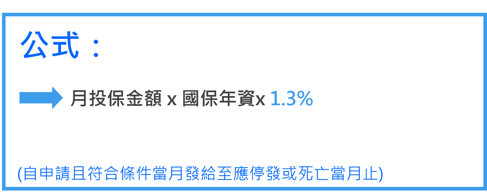

請領資格
請領資格
- 被保險人於國保加保期間遭受傷害或罹患疾病。
- 領有重度以上身心障礙手冊/證明(非重大傷病卡)。
- 經身心障礙鑑定醫療機構評估為無工作能力。
身心障礙給付金額
身心障礙給付金額

※如無欠費及領取社會福利津貼情形，發給基本保障4,872元(原本4,700元，
自105年1月1日
起調高為4,872元
)。※領取期間繼續參加國保，保費政府全額補助，65歲起擇優領取老年年金。無基本保障4,872元情形
- 有欠費致不計入保險年資情事
- 領取社會福利津貼
- 保險事故前1年有保險費欠繳情形，經通知限期繳納而逾期繳納(前3個月的身障年金無基本保障)
可合併請領勞保失能年金
請領資格
例
：陳太太目前參加國保(年資5年)，最近發生意外，取得重度身心障礙證明，且經評估無工作能力，申請國保的身心障礙年金。因陳太太同時還有勞保年資10年，平均月投保薪資3萬2,000元，她選擇合併請領國、勞保的身心障礙(失能)年金，勞保局即依國保、勞保的規定與年資，分別計算金額後合併發給。